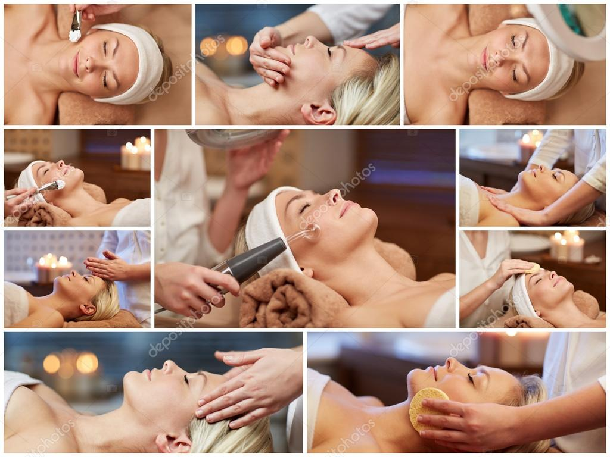

💆♀️ Masajes Faciales
✔️ Relajan los músculos y reducen la tensión.
✔️ Mejoran la circulación sanguínea y el drenaje linfático.
✔️ Favorecen la producción de colágeno y elastina.
✔️ Ayudan a reducir la hinchazón y ojeras.
✔️ Mejoran la absorción de productos faciales.
💖 Spa Facial
✔️ Limpia la piel profundamente.
✔️ Exfolia y elimina células muertas.
✔️ Hidrata y nutre la piel.
✔️ Ayuda a tratar problemas específicos como acné, manchas y arrugas.
✔️ Aporta luminosidad y frescura al rostro.
Masaje suave con movimientos circulares y de presión ligera para aliviar la tensión facial y mejorar la oxigenación de la piel.
📌 Ideal para: Reducir el estrés, mejorar el tono de la piel y relajar los músculos faciales.
Técnica japonesa que combina movimientos rápidos y presiones profundas para estimular la circulación y reafirmar la piel.
📌 Ideal para: Combatir la flacidez, mejorar la elasticidad y dar un efecto rejuvenecedor.
Técnica de movimientos suaves que activa el sistema linfático para reducir la retención de líquidos y toxinas.
📌 Ideal para: Personas con hinchazón facial, ojeras o piel cansada.
Uso de herramientas de jade o cuarzo para masajear el rostro y estimular la circulación.
📌 Ideal para: Desinflamar, mejorar el contorno del rostro y mejorar la absorción de productos.
Se colocan piedras de basalto calientes sobre puntos clave del rostro para relajar los músculos y mejorar la circulación.
📌 Ideal para: Relajar la piel y aliviar la tensión facial.
Elimina impurezas, puntos negros y células muertas con vapor, extracción y mascarillas.
📌 Ideal para: Piel grasa, con puntos negros o propensa al acné.
Tratamiento con sueros, mascarillas y masajes para restaurar la humedad de la piel.
📌 Ideal para: Piel seca o deshidratada.
Incluye colágeno, ácido hialurónico y masajes reafirmantes para reducir arrugas y líneas de expresión.
📌 Ideal para: Piel madura o con signos de envejecimiento.
Uso de exfoliantes químicos o enzimáticos para eliminar células muertas y mejorar la textura de la piel.
📌 Ideal para: Piel con manchas, cicatrices de acné o tono desigual.
Usa vitamina C y antioxidantes para dar un brillo natural al rostro y reducir manchas.
📌 Ideal para: Piel apagada o con manchas.
✔️ Limpia tu piel diariamente con un limpiador suave.
✔️ Exfolia una o dos veces por semana para eliminar células muertas.
✔️ Hidrata con cremas y sueros según tu tipo de piel.
✔️ Protege tu piel con protector solar todos los días.
✔️ Bebe agua para mantener la piel hidratada y luminosa.